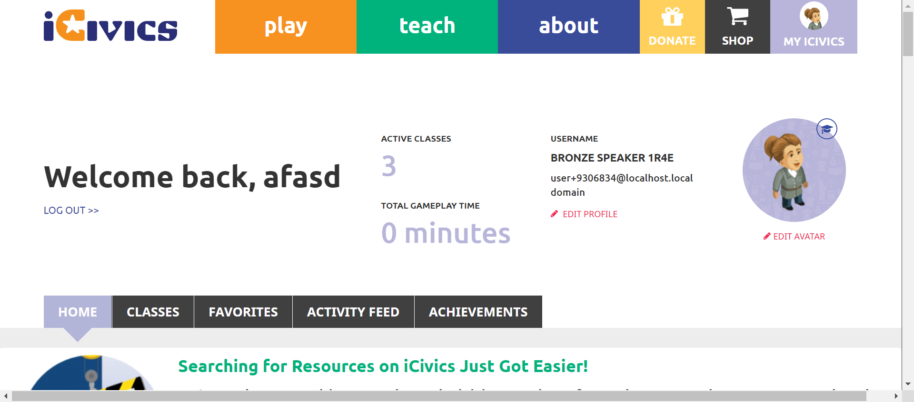
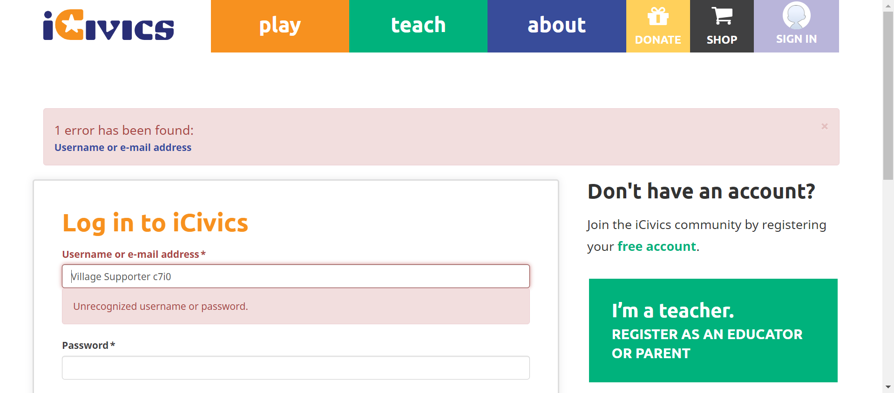
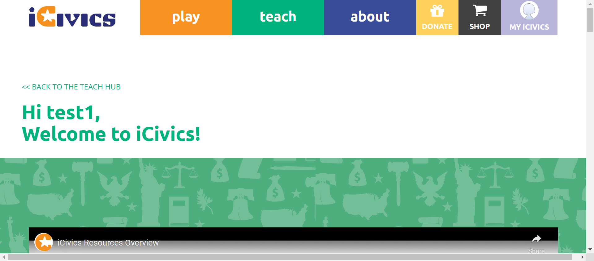
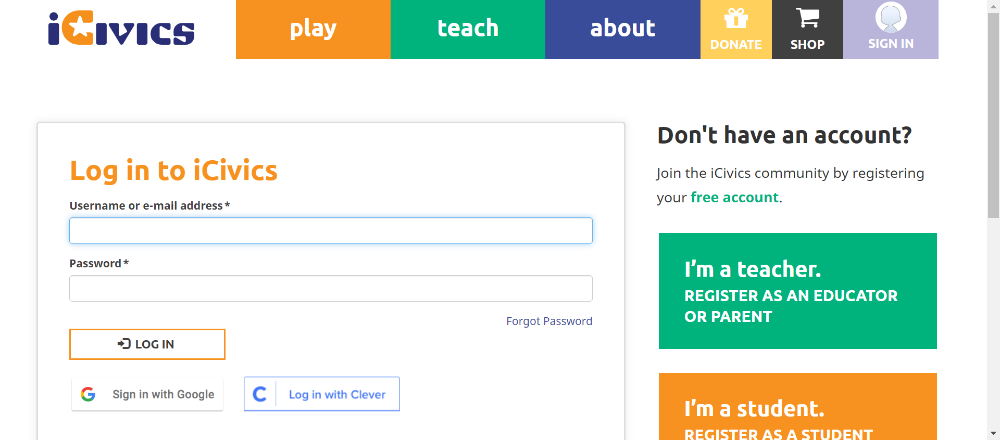
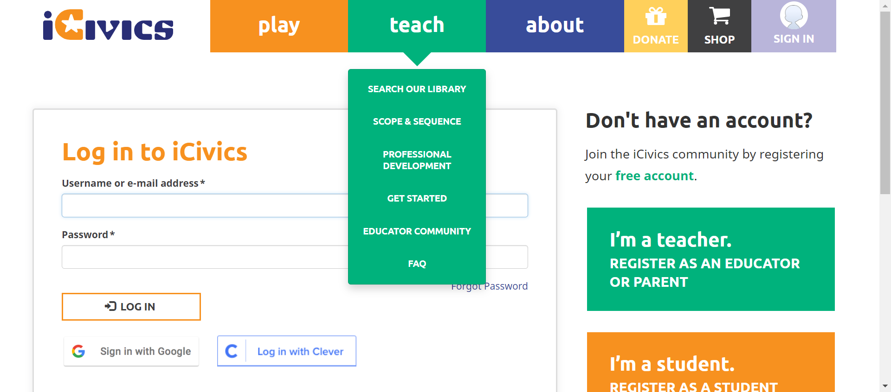
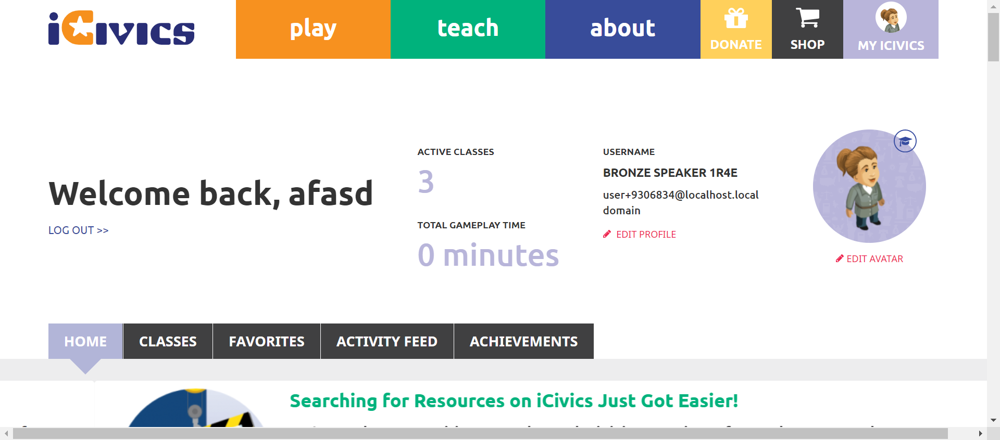
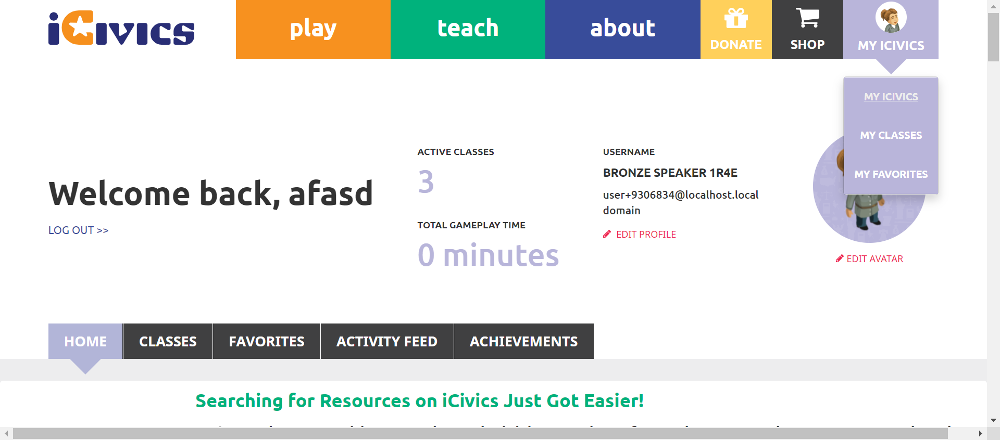

Tests
38 test(s) passed
7 test(s) failed, 0 others
Steps
225 step(s) passed
7 step(s) failed, 0 others
Tests
-
HomepageHeaderplay Jun 21, 2022 01:25:18 PM passJun 21, 2022 01:25:18 PM Jun 21, 2022 01:27:35 PM 0h 2m 17s+0ms
-
C35 - Can you see your avatar icon represented in the button?
Jun 21, 2022 10:19:03 PM 0h 6m 25s+979ms passStatus Timestamp Details check_circle 1:27:35 PM Avatar is edit and is display
-
-
HomepageHeaderplay Jun 21, 2022 01:51:44 PM passJun 21, 2022 01:51:44 PM Jun 21, 2022 01:52:24 PM 0h 0m 40s+0ms
-
C35 - Can you see your avatar icon represented in the button?
Jun 21, 2022 10:19:03 PM 0h 6m 25s+987ms passStatus Timestamp Details check_circle 1:52:24 PM My iCivics button has sillouette above
-
-
HomepageHeaderplay Jun 21, 2022 01:52:47 PM passJun 21, 2022 01:52:47 PM Jun 21, 2022 01:53:22 PM 0h 0m 35s+0ms
-
C35 - Can you see your avatar icon represented in the button?
Jun 21, 2022 10:19:03 PM 0h 6m 25s+992ms passStatus Timestamp Details check_circle 1:53:22 PM My iCivics button has sillouette above 
-
-
HomepageHeaderplay Jun 21, 2022 03:10:49 PM passJun 21, 2022 03:10:49 PM Jun 21, 2022 03:11:47 PM 0h 0m 58s+0ms
-
C35 - Can you see your avatar icon represented in the button?
Jun 21, 2022 10:19:03 PM 0h 6m 25s+997ms passStatus Timestamp Details check_circle 3:11:47 PM My iCivics button has sillouette above
-
-
HomepageHeaderplay Jun 21, 2022 03:39:27 PM passJun 21, 2022 03:39:27 PM Jun 21, 2022 03:48:00 PM 0h 8m 33s+0ms
-
C22 - When you select About, does a submenu open below the About button?
Jun 21, 2022 10:19:04 PM 0h 6m 26s+6ms passStatus Timestamp Details check_circle 3:39:59 PM The Element about clicked 
check_circle 3:39:59 PM Aboutsubmenu display successfully 
check_circle 3:40:26 PM The Element clicked 
-
C23 - Do you see links to About iCivics, Who We Are, Our Strategy, CIVXNOW, Our Team, Blog, and Contact Us in the submenu?
Jun 21, 2022 10:19:04 PM 0h 6m 26s+7ms passStatus Timestamp Details check_circle 3:41:00 PM The Element about clicked 
check_circle 3:41:00 PM Aboutsubmenu display successfully 
check_circle 3:41:00 PM Aboutbutton submenu count is 7 
check_circle 3:41:00 PM Aboutbutton submenu is ABOUT ICIVICS 
check_circle 3:41:01 PM Aboutbutton submenu is WHO WE ARE 
check_circle 3:41:01 PM Aboutbutton submenu is OUR STRATEGY 
check_circle 3:41:01 PM Aboutbutton submenu is CIVXNOW 
check_circle 3:41:01 PM Aboutbutton submenu is OUR TEAM 
check_circle 3:41:02 PM Aboutbutton submenu is BLOG 
check_circle 3:41:02 PM Aboutbutton submenu is CONTACT US 
-
C24 - When you select a link in the submenu, are you navigated to the appropriate page?
Jun 21, 2022 10:19:04 PM 0h 6m 26s+11ms passStatus Timestamp Details check_circle 3:41:32 PM The mouse over by xpath : (//a[@href='/about'])[3] is performed. 
check_circle 3:41:32 PM The element [[ChromeDriver: chrome on WINDOWS (a45632a3bd8183832b5d5aff5c3d5e5b)] -> xpath: (//li[@class='first about icivics']/a)[2]] is visible 
check_circle 3:41:33 PM The expected text contains the actual ABOUT ICIVICS 
check_circle 3:41:58 PM The Element ABOUT ICIVICS clicked 
check_circle 3:41:59 PM The expected https://staging.d9.icivics.org/about url as same as the https://staging.d9.icivics.org/about actual url. 
check_circle 3:41:59 PM The expected text contains the actual iCivics reimagines civic education for American democracy 
check_circle 3:41:59 PM The mouse over by xpath : (//a[@href='/about'])[3] is performed. 
check_circle 3:41:59 PM The element [[ChromeDriver: chrome on WINDOWS (a45632a3bd8183832b5d5aff5c3d5e5b)] -> xpath: (//li[contains(@class,'who we')]//a)[2]] is visible 
check_circle 3:42:00 PM The expected text contains the actual WHO WE ARE 
check_circle 3:42:29 PM The Element WHO WE ARE clicked 
check_circle 3:42:29 PM The expected https://staging.icivics.org/who-we-are url as same as the https://staging.icivics.org/who-we-are actual url. 
check_circle 3:42:34 PM The mouse over by xpath : (//a[@href='/about'])[3] is performed. 
check_circle 3:42:34 PM The element [[ChromeDriver: chrome on WINDOWS (a45632a3bd8183832b5d5aff5c3d5e5b)] -> xpath: (//li[@class='our strategy']//a)[2]] is visible 
check_circle 3:42:34 PM The expected text contains the actual OUR STRATEGY 
check_circle 3:42:55 PM The Element OUR STRATEGY clicked 
check_circle 3:42:55 PM The expected https://staging.icivics.org/our-strategy url as same as the https://staging.icivics.org/our-strategy actual url. 
check_circle 3:43:00 PM The mouse over by xpath : (//a[@href='/about'])[3] is performed. 
check_circle 3:43:00 PM The element [[ChromeDriver: chrome on WINDOWS (a45632a3bd8183832b5d5aff5c3d5e5b)] -> xpath: (//li[@class='civxnow']//a)[2]] is visible 
check_circle 3:43:00 PM The expected text contains the actual CIVXNOW 
check_circle 3:43:01 PM The Element CIVXNOW clicked 
check_circle 3:43:20 PM The expected https://civxnow.org/ url as same as the https://civxnow.org/ actual url. 
check_circle 3:43:42 PM The mouse over by xpath : (//a[@href='/about'])[3] is performed. 
check_circle 3:43:42 PM The element [[ChromeDriver: chrome on WINDOWS (a45632a3bd8183832b5d5aff5c3d5e5b)] -> xpath: (//a[@href='/our-team'])[2]] is visible 
check_circle 3:43:42 PM The expected text contains the actual OUR TEAM 
check_circle 3:44:09 PM The Element OUR TEAM clicked 
check_circle 3:44:10 PM The expected https://staging.icivics.org/our-team url as same as the https://staging.icivics.org/our-team actual url. 
check_circle 3:44:13 PM The mouse over by xpath : (//a[@href='/about'])[3] is performed. 
check_circle 3:44:13 PM The element [[ChromeDriver: chrome on WINDOWS (a45632a3bd8183832b5d5aff5c3d5e5b)] -> xpath: (//li[@class='blog']//a)[2]] is visible 
check_circle 3:44:13 PM The expected text contains the actual BLOG 
check_circle 3:44:18 PM The Element BLOG clicked 
check_circle 3:44:18 PM The expected https://staging.d9.icivics.org/news?keys=&tid%5B1%5D=1 url as same as the https://staging.d9.icivics.org/news?keys=&tid%5B1%5D=1 actual url. 
check_circle 3:44:18 PM The expected text contains the actual iCivics Blog and News 
check_circle 3:44:21 PM The mouse over by xpath : (//a[@href='/about'])[3] is performed. 
check_circle 3:44:21 PM The element [[ChromeDriver: chrome on WINDOWS (a45632a3bd8183832b5d5aff5c3d5e5b)] -> xpath: (//a[@href='/contact'])[2]] is visible 
check_circle 3:44:21 PM The expected text contains the actual CONTACT US 
check_circle 3:44:29 PM The Element CONTACT US clicked 
check_circle 3:44:29 PM The expected https://icivics.zendesk.com/hc/en-us/requests/new url as same as the https://icivics.zendesk.com/hc/en-us/requests/new actual url. 
check_circle 3:44:31 PM All links in the About dropdown is verified sucessfully 
-
C26 - If you are viewing one of the pages in the About submenu, is that page underlined in the submenu?
Jun 21, 2022 10:19:04 PM 0h 6m 26s+26ms passStatus Timestamp Details check_circle 3:45:05 PM The mouse over by xpath : (//a[@href='/about'])[3] is performed. 
check_circle 3:45:05 PM The element [[ChromeDriver: chrome on WINDOWS (2fbd5bd70275d321939fb7362c8d3336)] -> xpath: (//li[@class='first about icivics']/a)[2]] is visible 
check_circle 3:45:06 PM The expected text contains the actual ABOUT ICIVICS 
check_circle 3:45:26 PM The Element ABOUT ICIVICS clicked 
check_circle 3:45:26 PM The expected https://staging.d9.icivics.org/about url as same as the https://staging.d9.icivics.org/about actual url. 
check_circle 3:45:27 PM The expected text contains the actual iCivics reimagines civic education for American democracy 
check_circle 3:45:27 PM The mouse over by xpath : (//a[@href='/about'])[3] is performed. 
check_circle 3:45:27 PM The element [[ChromeDriver: chrome on WINDOWS (2fbd5bd70275d321939fb7362c8d3336)] -> xpath: (//li[contains(@class,'who we')]//a)[2]] is visible 
check_circle 3:45:28 PM The expected text contains the actual WHO WE ARE 
check_circle 3:45:53 PM The Element WHO WE ARE clicked 
check_circle 3:45:53 PM The expected https://staging.icivics.org/who-we-are url as same as the https://staging.icivics.org/who-we-are actual url. 
check_circle 3:45:57 PM The mouse over by xpath : (//a[@href='/about'])[3] is performed. 
check_circle 3:45:57 PM The element [[ChromeDriver: chrome on WINDOWS (2fbd5bd70275d321939fb7362c8d3336)] -> xpath: (//li[@class='our strategy']//a)[2]] is visible 
check_circle 3:45:58 PM The expected text contains the actual OUR STRATEGY 
check_circle 3:46:18 PM The Element OUR STRATEGY clicked 
check_circle 3:46:19 PM The expected https://staging.icivics.org/our-strategy url as same as the https://staging.icivics.org/our-strategy actual url. 
check_circle 3:46:22 PM The mouse over by xpath : (//a[@href='/about'])[3] is performed. 
check_circle 3:46:23 PM The element [[ChromeDriver: chrome on WINDOWS (2fbd5bd70275d321939fb7362c8d3336)] -> xpath: (//li[@class='civxnow']//a)[2]] is visible 
check_circle 3:46:23 PM The expected text contains the actual CIVXNOW 
check_circle 3:46:23 PM The Element CIVXNOW clicked 
check_circle 3:46:40 PM The expected https://civxnow.org/ url as same as the https://civxnow.org/ actual url. 
check_circle 3:46:43 PM The mouse over by xpath : (//a[@href='/about'])[3] is performed. 
check_circle 3:46:43 PM The element [[ChromeDriver: chrome on WINDOWS (2fbd5bd70275d321939fb7362c8d3336)] -> xpath: (//a[@href='/our-team'])[2]] is visible 
check_circle 3:46:43 PM The expected text contains the actual OUR TEAM 
check_circle 3:47:04 PM The Element OUR TEAM clicked 
check_circle 3:47:04 PM The expected https://staging.icivics.org/our-team url as same as the https://staging.icivics.org/our-team actual url. 
check_circle 3:47:08 PM The mouse over by xpath : (//a[@href='/about'])[3] is performed. 
check_circle 3:47:08 PM The element [[ChromeDriver: chrome on WINDOWS (2fbd5bd70275d321939fb7362c8d3336)] -> xpath: (//li[@class='blog']//a)[2]] is visible 
check_circle 3:47:08 PM The expected text contains the actual BLOG 
check_circle 3:47:14 PM The Element BLOG clicked 
check_circle 3:47:14 PM The expected https://staging.d9.icivics.org/news?keys=&tid%5B1%5D=1 url as same as the https://staging.d9.icivics.org/news?keys=&tid%5B1%5D=1 actual url. 
check_circle 3:47:14 PM The expected text contains the actual iCivics Blog and News 
check_circle 3:47:18 PM The mouse over by xpath : (//a[@href='/about'])[3] is performed. 
check_circle 3:47:18 PM The element [[ChromeDriver: chrome on WINDOWS (2fbd5bd70275d321939fb7362c8d3336)] -> xpath: (//a[@href='/contact'])[2]] is visible 
check_circle 3:47:18 PM The expected text contains the actual CONTACT US 
check_circle 3:47:23 PM The Element CONTACT US clicked 
check_circle 3:47:24 PM The expected https://icivics.zendesk.com/hc/en-us/requests/new url as same as the https://icivics.zendesk.com/hc/en-us/requests/new actual url. 
check_circle 3:47:30 PM All links in the About dropdown is verified sucessfully 
-
C27 - When you select About again while the submenu is open, does the submenu close?
Jun 21, 2022 10:19:04 PM 0h 6m 26s+40ms passStatus Timestamp Details check_circle 3:48:00 PM The Element about clicked 
check_circle 3:48:00 PM Aboutsubmenu display successfully 
check_circle 3:48:00 PM The Element about clicked 
check_circle 3:48:00 PM About button is successfully clicked again and about menu is close 
-
-
HomepageHeaderplay Jun 21, 2022 04:00:05 PM failJun 21, 2022 04:00:05 PM Jun 21, 2022 04:01:09 PM 0h 1m 4s+0ms
-
C22 - When you select About, does a submenu open below the About button?
Jun 21, 2022 10:19:04 PM 0h 6m 26s+43ms failStatus Timestamp Details check_circle 4:00:38 PM The Element about clicked 
check_circle 4:00:38 PM Aboutsubmenu display successfully 
check_circle 4:01:05 PM The Element clicked 
cancel 4:01:09 PM For Homepage aboutbutton is not present 
-
-
HomepageHeaderteach Jun 21, 2022 04:20:26 PM passJun 21, 2022 04:20:26 PM Jun 21, 2022 04:22:21 PM 0h 1m 55s+0ms
-
C15 - When you select Teach, does a submenu open below the Teach button?
Jun 21, 2022 10:19:04 PM 0h 6m 26s+50ms passStatus Timestamp Details check_circle 4:20:37 PM The Element teach clicked 
check_circle 4:20:37 PM Teachsubmenu is display 
-
C16 - Do you see links to Search Our Library, Scope and Sequence, Professional Development, Get Started, Educatory Community, and FAQ in the submenu?
Jun 21, 2022 10:19:04 PM 0h 6m 26s+51ms passStatus Timestamp Details check_circle 4:20:43 PM The Element teach clicked 
check_circle 4:20:43 PM Teachsubmenu is display 
check_circle 4:20:44 PM Teachbutton submenu count is 6 
check_circle 4:20:44 PM Teachbutton submenu is SEARCH OUR LIBRARY 
check_circle 4:20:44 PM Teachbutton submenu is SCOPE & SEQUENCE 
check_circle 4:20:44 PM Teachbutton submenu is PROFESSIONAL DEVELOPMENT 
check_circle 4:20:44 PM Teachbutton submenu is GET STARTED 
check_circle 4:20:45 PM Teachbutton submenu is EDUCATOR COMMUNITY 
check_circle 4:20:45 PM Teachbutton submenu is FAQ 
-
C17 - When you select a link in the submenu, are you navigated to the appropriate page?
Jun 21, 2022 10:19:04 PM 0h 6m 26s+55ms passStatus Timestamp Details check_circle 4:20:52 PM The mouse over by xpath : (//a[@title='Search Our Library'])[3] is performed. 
check_circle 4:20:52 PM The element [[ChromeDriver: chrome on WINDOWS (2b17f58c02df9e1907d777be77a7670d)] -> xpath: (//li[@class='first search our library']/a)[2]] is visible 
check_circle 4:20:53 PM The expected text contains the actual SEARCH OUR LIBRARY 
check_circle 4:21:14 PM The Element SEARCH OUR LIBRARY clicked 
check_circle 4:21:14 PM The expected https://staging.d9.icivics.org/teachers url as same as the https://staging.d9.icivics.org/teachers actual url. 
check_circle 4:21:15 PM The expected text contains the actual CONTENT SEARCH 
check_circle 4:21:15 PM The mouse over by xpath : (//a[@title='Search Our Library'])[3] is performed. 
check_circle 4:21:15 PM The element [[ChromeDriver: chrome on WINDOWS (2b17f58c02df9e1907d777be77a7670d)] -> xpath: (//a[@title='Scope and Sequence'])[2]] is visible 
check_circle 4:21:15 PM The expected text contains the actual SCOPE & SEQUENCE 
check_circle 4:21:19 PM The Element SCOPE & SEQUENCE clicked check_circle 4:21:19 PM The expected https://staging.d9.icivics.org/user/login?destination=/viewpdf%3Fpath%3D/sites/default/files/Scope%2520%2526%2520Sequence%25205.13.pdf url as same as the https://staging.d9.icivics.org/user/login?destination=/viewpdf%3Fpath%3D/sites/default/files/Scope%2520%2526%2520Sequence%25205.13.pdf actual url. 
check_circle 4:21:19 PM The expected text contains the actual Log in to iCivics check_circle 4:21:20 PM The mouse over by xpath : (//a[@title='Search Our Library'])[3] is performed. check_circle 4:21:20 PM The element [[ChromeDriver: chrome on WINDOWS (2b17f58c02df9e1907d777be77a7670d)] -> xpath: (//li[@class='professional development']//a)[2]] is visible 
check_circle 4:21:20 PM The expected text contains the actual PROFESSIONAL DEVELOPMENT 
check_circle 4:21:25 PM The Element PROFESSIONAL DEVELOPMENT clicked 
check_circle 4:21:25 PM The expected https://staging.d9.icivics.org/products/professional-development url as same as the https://staging.d9.icivics.org/products/professional-development actual url. 
check_circle 4:21:25 PM The expected text contains the actual Professional Development 
check_circle 4:21:25 PM The mouse over by xpath : (//a[@title='Search Our Library'])[3] is performed. 
check_circle 4:21:25 PM The element [[ChromeDriver: chrome on WINDOWS (2b17f58c02df9e1907d777be77a7670d)] -> xpath: (//li[@class='get started']//a)[2]] is visible 
check_circle 4:21:26 PM The expected text contains the actual GET STARTED 
check_circle 4:21:45 PM The Element GET STARTED clicked 
check_circle 4:21:46 PM The expected https://staging.d9.icivics.org/getstarted url as same as the https://staging.d9.icivics.org/getstarted actual url. 
check_circle 4:21:46 PM The expected text contains the actual Welcome to iCivics! 
check_circle 4:21:46 PM The mouse over by xpath : (//a[@title='Search Our Library'])[3] is performed. 
check_circle 4:21:46 PM The element [[ChromeDriver: chrome on WINDOWS (2b17f58c02df9e1907d777be77a7670d)] -> xpath: (//li[@class='educator community']//a)[2]] is visible 
check_circle 4:21:46 PM The expected text contains the actual EDUCATOR COMMUNITY 
check_circle 4:21:54 PM The Element EDUCATOR COMMUNITY clicked 
check_circle 4:22:01 PM The mouse over by xpath : (//a[@title='Search Our Library'])[3] is performed. 
check_circle 4:22:02 PM The element [[ChromeDriver: chrome on WINDOWS (2b17f58c02df9e1907d777be77a7670d)] -> xpath: (//li[@class='last faq']//a)[2]] is visible 
check_circle 4:22:02 PM The expected text contains the actual FAQ 
check_circle 4:22:14 PM The Element FAQ clicked 
check_circle 4:22:14 PM The expected https://icivics.zendesk.com/hc/en-us url as same as the https://icivics.zendesk.com/hc/en-us actual url. 
check_circle 4:22:14 PM The expected text contains the actual Getting Started 
check_circle 4:22:14 PM All links in the teach dropdown is verified sucessfully 
-
C20 - When you select Teach again while the submenu is open, does the submenu close?
Jun 21, 2022 10:19:04 PM 0h 6m 26s+64ms passStatus Timestamp Details check_circle 4:22:21 PM The Element teach clicked 
check_circle 4:22:21 PM Teachsubmenu is display 
check_circle 4:22:21 PM The Element teach clicked 
check_circle 4:22:21 PM on clicking again teach submenu is close 
-
-
HomepageHeaderteach Jun 21, 2022 04:41:17 PM passJun 21, 2022 04:41:17 PM Jun 21, 2022 04:41:25 PM 0h 0m 8s+0ms
-
C19 - If you are viewing one of the pages in the Teach submenu, is that page underlined in the submenu?
Jun 21, 2022 10:19:04 PM 0h 6m 26s+67ms passStatus Timestamp Details check_circle 4:41:24 PM The Element teach clicked 
check_circle 4:41:25 PM Teachsubmenu is display 
-
-
HomepageHeaderteach2 Jun 21, 2022 05:47:58 PM passJun 21, 2022 05:47:58 PM Jun 21, 2022 05:48:36 PM 0h 0m 38s+0ms
-
C19 - If you are viewing one of the pages in the Teach submenu, is that page underlined in the submenu?
Jun 21, 2022 10:19:04 PM 0h 6m 26s+70ms passStatus Timestamp Details check_circle 5:48:10 PM The Element teach clicked 
check_circle 5:48:10 PM Teachsubmenu is display 
check_circle 5:48:36 PM The Element teach clicked 
-
-
HomepageHeaderteach2 Jun 21, 2022 05:50:12 PM passJun 21, 2022 05:50:12 PM Jun 21, 2022 05:50:48 PM 0h 0m 36s+0ms
-
C19 - If you are viewing one of the pages in the Teach submenu, is that page underlined in the submenu?
Jun 21, 2022 10:19:04 PM 0h 6m 26s+73ms passStatus Timestamp Details check_circle 5:50:21 PM The Element teach clicked 
check_circle 5:50:21 PM Teachsubmenu is display 
check_circle 5:50:48 PM The Element teach clicked 
-
-
HomepageHeaderteach2 Jun 21, 2022 05:54:53 PM passJun 21, 2022 05:54:53 PM Jun 21, 2022 05:55:32 PM 0h 0m 39s+0ms
-
C19 - If you are viewing one of the pages in the Teach submenu, is that page underlined in the submenu?
Jun 21, 2022 10:19:04 PM 0h 6m 26s+76ms passStatus Timestamp Details check_circle 5:55:05 PM The Element teach clicked 
check_circle 5:55:05 PM Teachsubmenu is display 
check_circle 5:55:32 PM The Element teach clicked 
-
-
HomepageHeaderteach2 Jun 21, 2022 05:57:19 PM passJun 21, 2022 05:57:19 PM Jun 21, 2022 05:57:58 PM 0h 0m 39s+0ms
-
C19 - If you are viewing one of the pages in the Teach submenu, is that page underlined in the submenu?
Jun 21, 2022 10:19:04 PM 0h 6m 26s+79ms passStatus Timestamp Details check_circle 5:57:33 PM The Element teach clicked 
check_circle 5:57:33 PM Teachsubmenu is display check_circle 5:57:58 PM The Element teach clicked 
-
-
HomepageHeaderteach2 Jun 21, 2022 06:26:55 PM passJun 21, 2022 06:26:55 PM Jun 21, 2022 06:27:27 PM 0h 0m 32s+0ms
-
C19 - If you are viewing one of the pages in the Teach submenu, is that page underlined in the submenu?
Jun 21, 2022 10:19:04 PM 0h 6m 26s+82ms passStatus Timestamp Details check_circle 6:27:27 PM Teachsubmenu is display 
-
-
HomepageHeaderteach2 Jun 21, 2022 06:30:59 PM passJun 21, 2022 06:30:59 PM Jun 21, 2022 06:31:30 PM 0h 0m 31s+0ms
-
C19 - If you are viewing one of the pages in the Teach submenu, is that page underlined in the submenu?
Jun 21, 2022 10:19:04 PM 0h 6m 26s+84ms passStatus Timestamp Details check_circle 6:31:30 PM Teachsubmenu is display 
-
-
HomepageHeaderteach2 Jun 21, 2022 06:33:13 PM failJun 21, 2022 06:33:13 PM Jun 21, 2022 06:34:10 PM 0h 0m 57s+0ms
-
C19 - If you are viewing one of the pages in the Teach submenu, is that page underlined in the submenu?
Jun 21, 2022 10:19:04 PM 0h 6m 26s+87ms failStatus Timestamp Details check_circle 6:33:42 PM Teachsubmenu is display 
check_circle 6:33:51 PM The Element teach clicked 
check_circle 6:33:54 PM Selected page is underlined 
check_circle 6:34:01 PM The Element teach clicked cancel 6:34:04 PM Selected page is not underlined 
check_circle 6:34:10 PM The Element teach clicked 
-
-
HomepageHeaderplay Jun 21, 2022 07:04:26 PM passJun 21, 2022 07:04:26 PM Jun 21, 2022 07:05:00 PM 0h 0m 34s+0ms
-
C35 - Can you see your avatar icon represented in the button?
Jun 21, 2022 10:19:04 PM 0h 6m 26s+91ms passStatus Timestamp Details check_circle 7:05:00 PM My iCivics button has sillouette avatar 
-
-
HomepageHeaderplay Jun 21, 2022 07:12:50 PM failJun 21, 2022 07:12:50 PM Jun 21, 2022 07:13:59 PM 0h 1m 9s+0ms
-
C35 - Can you see your avatar icon represented in the button?
Jun 21, 2022 10:19:04 PM 0h 6m 26s+93ms failStatus Timestamp Details check_circle 7:13:28 PM Avatar image is displayed on the button 
cancel 7:13:59 PM The Element with locator:XPATH&(//a[@title='Sign In'])[3] Not Found with value: (//a[@title='Sign In'])[3]
-
-
HomepageHeaderplay Jun 21, 2022 07:14:46 PM passJun 21, 2022 07:14:46 PM Jun 21, 2022 07:15:23 PM 0h 0m 37s+0ms
-
C35 - Can you see your avatar icon represented in the button?
Jun 21, 2022 10:19:04 PM 0h 6m 26s+95ms passStatus Timestamp Details check_circle 7:15:23 PM Avatar image is displayed on the button 
-
-
HomepageHeaderMyIcivicsMisc Jun 21, 2022 08:53:21 PM failJun 21, 2022 08:53:21 PM Jun 21, 2022 08:53:59 PM 0h 0m 38s+0ms
-
C35 - Can you see your avatar icon represented in the button?
Jun 21, 2022 10:19:04 PM 0h 6m 26s+97ms failStatus Timestamp Details cancel 8:53:59 PM Avatar is not displayed 
-
-
HomepageHeaderMyIcivicsMisc Jun 21, 2022 08:59:35 PM failJun 21, 2022 08:59:35 PM Jun 21, 2022 09:00:13 PM 0h 0m 38s+0ms
-
C35 - Can you see your avatar icon represented in the button?
Jun 21, 2022 10:19:04 PM 0h 6m 26s+99ms failStatus Timestamp Details cancel 9:00:13 PM Avatar is not displayed 
-
-
HomepageHeaderMyIcivicsMisc Jun 21, 2022 09:03:34 PM passJun 21, 2022 09:03:34 PM Jun 21, 2022 09:04:10 PM 0h 0m 36s+0ms
-
C35 - Can you see your avatar icon represented in the button?
Jun 21, 2022 10:19:04 PM 0h 6m 26s+101ms passStatus Timestamp Details check_circle 9:04:10 PM Avatar image is displayed on the button 
-
-
HomepageHeaderMyIcivicsMisc Jun 21, 2022 09:10:03 PM passJun 21, 2022 09:10:03 PM Jun 21, 2022 09:10:39 PM 0h 0m 36s+0ms
-
C35 - Can you see your avatar icon represented in the button?
Jun 21, 2022 10:19:04 PM 0h 6m 26s+103ms passStatus Timestamp Details check_circle 9:10:39 PM My iCivics button has sillouette avatar 
-
-
HomepageHeaderMyIcivicsMisc Jun 21, 2022 09:49:37 PM failJun 21, 2022 09:49:37 PM Jun 21, 2022 09:58:06 PM 0h 8m 29s+0ms
-
C29 - Can you see an appropriate icon for Donate?
Jun 21, 2022 10:19:04 PM 0h 6m 26s+109ms passStatus Timestamp Details check_circle 9:49:46 PM Donatebutton is displayed 
-
C30 - When you select Donate, are you directed to https://give.icivics.org/?
Jun 21, 2022 10:19:04 PM 0h 6m 26s+110ms passStatus Timestamp Details check_circle 9:49:56 PM Donatebutton is clicked 
check_circle 9:50:09 PM 'Donatebutton is clicked'redirect to corresponding pagehttps://give.icivics.org/q7Mcn0NUdUylSaBbpfwl4w2?_ga=2.204728211.2067564854.1655828394-1918609750.1655828393 
-
C31 - Can you see an appropriate icon for Shop?
Jun 21, 2022 10:19:04 PM 0h 6m 26s+110ms passStatus Timestamp Details check_circle 9:50:15 PM Shopbutton is displayed 
-
C32 - When you select Shop, are you directed to https://icivics.myshopify.com/?
Jun 21, 2022 10:19:04 PM 0h 6m 26s+111ms passStatus Timestamp Details check_circle 9:50:21 PM Shopbutton is clicked 
check_circle 9:50:26 PM 'Shopbutton is clicked'redirect to corresponding pagehttps://icivics.myshopify.com/ 
-
C34 - If you are signed in, do you see a My iCivics button instead of Sign In?
Jun 21, 2022 10:19:04 PM 0h 6m 26s+111ms passStatus Timestamp Details check_circle 9:50:55 PM Myicivicsbutton is display after login instead of signin button 
-
C35 - Can you see your avatar icon represented in the button?
Jun 21, 2022 10:19:04 PM 0h 6m 26s+112ms passStatus Timestamp Details check_circle 9:51:29 PM Avatar image is displayed on the button 
-
C35 - Can you see your avatar icon represented in the button?
Jun 21, 2022 10:19:04 PM 0h 6m 26s+112ms passStatus Timestamp Details check_circle 9:51:59 PM My iCivics button has sillouette avatar 
-
C36 - When you select Sign In/My iCivics, does a submenu open below the button?
Jun 21, 2022 10:19:04 PM 0h 6m 26s+113ms passStatus Timestamp Details check_circle 9:53:34 PM myicivics button is clicked and submenu is display 
-
C37 - When you select Sign In, do you see links to Sign In, Register As a Student, Register As A Teacher in the submenu?
Jun 21, 2022 10:19:04 PM 0h 6m 26s+113ms passStatus Timestamp Details check_circle 9:53:57 PM myicivics button is clicked and submenu is display 
check_circle 9:53:57 PM myicivics submenu count is 3 
check_circle 9:53:57 PM myicivcs submenu is MY ICIVICS 
check_circle 9:53:57 PM myicivcs submenu is MY CLASSES 
check_circle 9:53:57 PM myicivcs submenu is MY FAVORITES 
-
C39 -When you select a link in the submenu, are you navigated to the appropriate page?
Jun 21, 2022 10:19:04 PM 0h 6m 26s+114ms passStatus Timestamp Details check_circle 9:54:33 PM The mouse over by xpath : (//a[@title='MY ICIVICS'])[2] is performed. check_circle 9:54:33 PM The element [[ChromeDriver: chrome on WINDOWS (a14610c5bcde14dcd7be000b858043d9)] -> xpath: (//a[@title='My iCivics'])[2]] is visible 
check_circle 9:54:34 PM The expected text contains the actual MY ICIVICS 
check_circle 9:54:54 PM The Element MY ICIVICS clicked 
check_circle 9:54:54 PM The expected https://staging.d9.icivics.org/user/9306834 url as same as the https://staging.d9.icivics.org/user/9306834 actual url. 
check_circle 9:54:54 PM The expected text contains the actual Welcome back, 
check_circle 9:54:55 PM The mouse over by xpath : (//a[@title='MY ICIVICS'])[2] is performed. 
check_circle 9:54:55 PM The element [[ChromeDriver: chrome on WINDOWS (a14610c5bcde14dcd7be000b858043d9)] -> xpath: (//a[@title='My Classes'])[2]] is visible 
check_circle 9:54:55 PM The expected text contains the actual MY CLASSES 
check_circle 9:55:01 PM The Element MY CLASSES clicked 
check_circle 9:55:01 PM The expected https://staging.d9.icivics.org/classes url as same as the https://staging.d9.icivics.org/classes actual url. 
check_circle 9:55:01 PM The expected text contains the actual SYNC CLASSROOM CLASSES 
check_circle 9:55:01 PM The mouse over by xpath : (//a[@title='MY ICIVICS'])[2] is performed. 
check_circle 9:55:02 PM The element [[ChromeDriver: chrome on WINDOWS (a14610c5bcde14dcd7be000b858043d9)] -> xpath: (//a[@title='My Favorites'])[2]] is visible 
check_circle 9:55:02 PM The expected text contains the actual MY FAVORITES 
check_circle 9:55:18 PM The Element MY FAVORITES clicked 
check_circle 9:55:18 PM The expected https://staging.d9.icivics.org/favorites url as same as the https://staging.d9.icivics.org/favorites actual url. 
check_circle 9:55:19 PM The expected text contains the actual Lessons from Antiquity 
-
C41 -If you are viewing one of the pages in the Sign In/My iCivics submenu, is that page underlined in the submenu?
Jun 21, 2022 10:19:04 PM 0h 6m 26s+122ms failStatus Timestamp Details check_circle 9:55:49 PM myicivics button is clicked and submenu is display 
check_circle 9:56:24 PM The Element MY ICIVICS clicked 
check_circle 9:56:27 PM Selected page is underlined cancel 9:57:00 PM Selected page is not underlined 
check_circle 9:57:33 PM Selected page is underlined 
check_circle 9:57:33 PM The Element MY ICIVICS clicked 
check_circle 9:57:33 PM Myicivics submenu is close on clicking again 
-
C42 - When you select Sign In / My iCivics again while the submenu is open, does the submenu close?
Jun 21, 2022 10:19:04 PM 0h 6m 26s+123ms passStatus Timestamp Details check_circle 9:58:06 PM The Element MY ICIVICS clicked 
check_circle 9:58:06 PM Myicivics submenu is close on clicking again 
-
-
HomepageHeaderMyIcivicsMisc Jun 21, 2022 10:01:52 PM failJun 21, 2022 10:01:52 PM Jun 21, 2022 10:04:07 PM 0h 2m 15s+0ms
-
C41 -If you are viewing one of the pages in the Sign In/My iCivics submenu, is that page underlined in the submenu?
Jun 21, 2022 10:19:04 PM 0h 6m 26s+130ms failStatus Timestamp Details check_circle 10:02:25 PM myicivics button is clicked and submenu is display 
check_circle 10:03:01 PM Selected page is underlined 
cancel 10:03:34 PM Selected page is not underlined 
check_circle 10:04:06 PM Selected page is underlined 
check_circle 10:04:07 PM The Element MY ICIVICS clicked 
check_circle 10:04:07 PM Myicivics submenu is close on clicking again 
-
-
HomepageHeaderMyIcivicsMisc Jun 21, 2022 10:09:48 PM passJun 21, 2022 10:09:48 PM Jun 21, 2022 10:10:24 PM 0h 0m 36s+0ms
-
C41 -If you are viewing one of the pages in the Sign In/My iCivics submenu, is that page underlined in the submenu?
Jun 21, 2022 10:19:04 PM 0h 6m 26s+140ms passStatus Timestamp Details check_circle 10:10:24 PM myicivics button is clicked and submenu is display 
-
-
HomepageHeaderMyIcivicsMisc Jun 21, 2022 10:12:38 PM passJun 21, 2022 10:12:38 PM Jun 21, 2022 10:13:09 PM 0h 0m 31s+0ms
-
C41 -If you are viewing one of the pages in the Sign In/My iCivics submenu, is that page underlined in the submenu?
Jun 21, 2022 10:19:04 PM 0h 5m 55s+141ms passStatus Timestamp Details check_circle 10:13:09 PM myicivics button is clicked and submenu is display 
-
-
HomepageHeaderMyIcivicsMisc Jun 21, 2022 10:19:04 PM passJun 21, 2022 10:19:04 PM Jun 21, 2022 10:19:59 PM 0h 0m 55s+496ms
-
C41 -If you are viewing one of the pages in the Sign In/My iCivics submenu, is that page underlined in the submenu?
Jun 21, 2022 10:19:59 PM 0h 0m 52s+797ms passStatus Timestamp Details check_circle 10:19:59 PM myicivics button is clicked and submenu is display 
-
info_outline
check_circle
cancel
cancel
error
warning
redo
clear
Dashboard
Tests
45
Steps
232
Start
Jun 21, 2022 10:19:03 PM
End
Jun 21, 2022 10:20:37 PM
Time Taken
0h 1m 33s+741ms